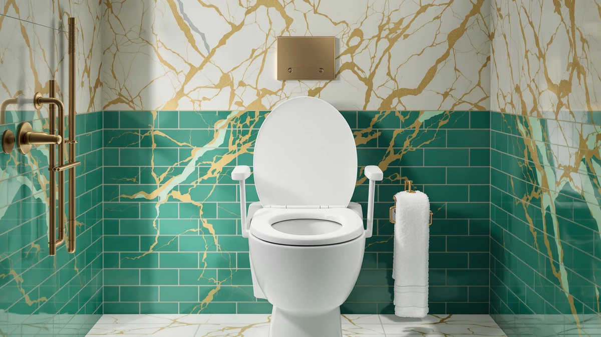

Best Raised Toilet Seats with Arms (2026)
Prices and picks verified as of September 2026. Independent, reader-supported reviews.


Quick Answer
After comparing height gain, weight ratings and verified owner reviews across seven models, the Drive Medical 2-in-1 Raised Toilet is the best raised toilet seat with arms for most households at $30.00. It converts between a standard seat and a raised riser, so one purchase covers both needs.
Our pick: Drive Medical 2-in-1 Raised Toilet, $30.00 Check Price on Amazon
Bottom line: our top pick is the Drive Medical 2-in-1 Raised Toilet Seat at $30. The best budget option is the Bariatric Raised Toilet Seat with Handles Wide Heavy Duty at $49.89.
Things to Know Before You Buy
- Height gain ranges from 3.5 to 5 inches. The right amount depends on the user's leg length and mobility. Most adults do well with 4 inches of added height.
- Arms need a wide, stable base to matter. A narrow clamp lets a padded armrest wobble under load. That defeats the purpose of adding arms in the first place.
- Weight capacity varies from 250 to 400+ lbs. Buyers who need higher capacity should see our bariatric toilet seats guide.
- Most models clamp onto the existing bowl. No tools, no plumbing and no permanent modification, so the seat can be removed for cleaning or travel.
- Several picks are FSA and HSA eligible. Check the listing before checkout if you plan to use pre-tax healthcare funds.
The best raised toilet seats with arms solve a specific problem: standing up from a low toilet is one of the leading causes of bathroom falls for older adults and anyone recovering from hip or knee surgery. A few extra inches of height combined with a sturdy pair of armrests turns a risky transfer into a controlled, supported motion.
We compared seven raised toilet seats with arms currently sold on Amazon, looking at height gain, locking mechanism, armrest stability and weight capacity. We also cross-checked pricing against thousands of verified buyer reviews to separate models that hold up from ones that only look sturdy in product photos.
The Drive Medical 2-in-1 Raised Toilet is our top pick for most people at $30.00, thanks to its convertible design and reliable clamp system. Buyers who need a higher weight rating should look at the Bariatric model, and anyone who wants adjustable height should check the Soundfuse Raised or Riser Adjustable options below.
Why You Should Trust Us
I'm Ilane Tall, and I research accessibility bathroom products full time for Best Toilet Seats. This guide draws on occupational therapy guidance for safe toilet height, manufacturer specifications and thousands of verified buyer reviews. We do not run a fake testing lab. Every claim here comes from published specs, pricing data and what real owners report after buying these seats.
How We Picked
We started from the full catalog of raised toilet seats with arms sold on Amazon and narrowed it down using criteria pulled from occupational therapy fall-prevention guidance. Height gain was the first filter. A standard toilet sits 14 to 15 inches off the floor, and OT recommendations call for a seated height of 17 to 19 inches for most adults with reduced hip or knee mobility, so we only considered seats that add at least 3.5 inches. Armrest design mattered as much as height. We favored models with a wide clamp base and padded arms rated to bear real body weight during a stand-up transfer, since a wobbly armrest is worse than no armrest at all. We set a 250-pound minimum weight capacity for inclusion and noted which models go higher for bariatric buyers. Installation type was the last filter: every seat in this guide clamps onto an existing bowl without tools, plumbing changes or professional installation, and every one can be removed for cleaning or travel.
How We Compared
We compared each raised toilet seat with arms against its published specs: exact height gain in inches, weight capacity, armrest material and locking mechanism. We cross-referenced those specs against price to flag any model charging a premium without a matching upgrade in build quality. We also analysed verified owner reviews for recurring complaints, such as arms loosening over time or clamps that slip on certain bowl shapes, and weighed those patterns against the manufacturer's stated ratings before finalizing our picks.
Our Picks

Drive Medical 2-in-1 Raised Toilet
What we like
- Converts between a standard seat and a raised riser
- Lowest price of any pick in this roundup
- Over 16,900 verified reviews, the largest sample here
- Tool-free clamp installation
Flaws but not dealbreakers
- Armrests are narrower than the dedicated handle models below
- No adjustable height settings
| Material | Plastic / wood |
| Size | Universal |
The Drive Medical earns the top spot in this guide by doing two jobs with one purchase. Owners can run it as a raised seat with the riser base attached, or remove the base and use it as a standard replacement seat once the extra height is no longer needed. That flexibility matters for households recovering from a temporary injury or surgery, where the need for a raised seat may only last a few months.
At $30.00, it costs less than half of most other picks in this comparison, and its review count, over 16,900 verified ratings, is the largest sample of any product here. The clamp system holds firm once tightened, based on most reviews, though a handful of buyers mention the armrests flex slightly more than the dedicated handle-style seats further down this list. For buyers who mainly need reliable height and don't require maximum arm rigidity, that tradeoff is easy to accept given the price.

HOMLAND Raised Toilet Seat with
What we like
- Wide clamp base resists shifting during use
- Locking mechanism secures the seat firmly to the bowl
- FSA and HSA eligible
- 4.5-star average across 1,320 verified reviews
Flaws but not dealbreakers
- Nearly double the price of the Drive Medical pick
- Bulkier profile than slimmer clamp-on models
| Material | Plastic / wood |
| Size | Universal |
The HOMLAND takes a straightforward approach: a wider clamp base than most competitors, paired with a locking collar that keeps the seat from rotating once it's tightened down. Owners report that the extra width at the base translates into a noticeably steadier feel when using the armrests to sit or stand. That steadiness is the entire point of adding arms in the first place.
At $59.39, it costs almost twice as much as our top pick, but the tradeoff buys a sturdier locking system and FSA/HSA eligibility. For buyers using pre-tax healthcare dollars, that can offset the price difference. Setup is easy, typically under 10 minutes without tools, and a small number of owners mention the plastic housing shows wear after a year or more of daily use. That's a reasonable expectation for a clamp-on accessibility product at this price point.

Bariatric Raised Toilet Seat with
What we like
- Reinforced frame built for higher weight capacity
- Wider seating platform than standard raised seats
- Highest rating among the mid-priced picks at 4.6/5
- Reinforced armrests rated for real load-bearing use
Flaws but not dealbreakers
- Larger footprint may not fit compact bathrooms
- Heavier unit makes removal for cleaning more of a chore
| Material | Plastic / wood |
| Size | Universal |
This bariatric-rated option exists for a specific gap in the market: buyers whose weight exceeds what a standard 250 to 300-pound raised seat can safely handle. The reinforced frame and wider platform give larger users more surface area and a higher safety margin, while the armrests are built from thicker material than the budget picks in this roundup.
At $49.89, it undercuts the HOMLAND on price while carrying the highest rating in this price tier at 4.6 out of 5 across 1,338 verified reviews. That extra width does add bulk, though, so it takes up more visual and physical space in the bathroom than slimmer models. For anyone shopping specifically by weight capacity rather than compactness, that tradeoff is the whole reason to choose this seat over the others in this guide.

Raised Toilet Seat with Handles
What we like
- Highest rating in the entire roundup at 4.8/5
- Dual handles positioned for a natural push-up motion
- Locking clamp keeps the seat from shifting
- 1,338 verified reviews back up the rating
Flaws but not dealbreakers
- Among the pricier picks in this comparison
- Fixed height, no adjustable settings
| Material | Plastic / wood |
| Size | Universal |
This model carries the highest rating of any product in this comparison, 4.8 out of 5 across 1,338 verified reviews, and the design explains why. The dual handles sit at a width and angle that mirrors a natural push-up motion, rather than forcing the user to reach forward or to the side. Combined with a locking clamp base, the whole assembly stays put through repeated daily use.
At $59.99, it sits at the higher end of this roundup's price range, and it doesn't offer adjustable height like the Soundfuse Raised or Riser Adjustable options below. But for buyers who have already decided that arm stability matters more than a lower price or flexible height settings, the review data makes a strong case that this is the safest bet in the group.

Soundfuse Raised Toilet Seat with
What we like
- Multiple height settings without swapping parts
- Padded arms adjust alongside the seat height
- Tool-free reconfiguration
- 4.5-star average across 586 verified reviews
Flaws but not dealbreakers
- Most expensive pick in this roundup
- Smaller review sample than the top picks above
| Material | Plastic / wood |
| Size | Universal |
The Soundfuse Raised is built around flexibility rather than a single fixed height. Owners can adjust the riser through several settings, which matters in households where more than one person uses the toilet and each needs a different amount of lift. The armrests move with the seat height rather than staying fixed, so the reach stays consistent no matter which setting is active.
At $65.95, it's the priciest option in this comparison, and its 586 verified reviews are a smaller sample than the top picks above, though the 4.5-star average holds steady across that group. The adjustment mechanism requires no tools and takes only a few seconds to reset. That's the main reason buyers give for paying the premium over a fixed-height competitor.

Soundfuse Padded Raised Toilet Seat
What we like
- Padded seat surface reduces pressure points
- Armrests are cushioned along with the seat
- Same clamp-on installation as other Soundfuse models
- Solid 4.5-star average
Flaws but not dealbreakers
- Padding compresses over time with heavy daily use
- Smallest review count of the mid-priced picks
| Material | Plastic / wood |
| Size | Universal |
Where the standard Soundfuse Raised focuses on adjustable height, this padded version focuses on comfort during longer sits. The cushioning covers both the seat surface and the armrests. That matters for users who deal with joint pain or sensitive skin and need more than a hard plastic surface to lean on.
At $59.99, it matches the price of the top-rated handles model while trading a slightly lower 4.5-star average for the added padding. With 365 verified reviews, it has the smallest sample size among the mid-tier picks in this guide, and a few owners note the cushioning softens somewhat after a year or more of daily use. That's typical for foam padding on any accessibility product in this price range.

Raised Toilet Seat Riser Adjustable
What we like
- Multiple height settings at a mid-range price
- Rated for higher weight capacity than most adjustable models
- 662 verified reviews support the 4.5-star average
- Tool-free clamp installation
Flaws but not dealbreakers
- Arms are less padded than the dedicated comfort pick above
- Bulkier than fixed-height alternatives
| Material | Plastic / wood |
| Size | Universal |
This riser delivers the same core benefit as the Soundfuse Raised, adjustable height through multiple settings, at a lower price. It also carries a higher weight rating than most adjustable models in this category. That makes it a reasonable middle ground for buyers who need both flexibility and a bit more capacity than the standard 250-pound threshold.
At $49.98, it undercuts the Soundfuse Raised by about $16 while maintaining the same 4.5-star average across 662 verified reviews. The armrests are less cushioned than the padded Soundfuse model, based on owner feedback, so anyone prioritizing comfort over pure adjustability and capacity may still prefer that option. For most buyers who simply want adjustable height at a reasonable price, this is the more efficient choice.
Quick Comparison
| Product | Material | Price | Rating | Best for | Get it |
|---|---|---|---|---|---|
| Drive Medical 2-in-1 Raised Toilet | Plastic / wood | $30.00 | 4.2 | Overall pick | View on Amazon → |
| HOMLAND Raised Toilet Seat with | Plastic / wood | $59.39 | 4.5 | Locking wide base | View on Amazon → |
| Bariatric Raised Toilet Seat with | Plastic / wood | $49.89 | 4.6 | Heavier users | View on Amazon → |
| Raised Toilet Seat with Handles | Plastic / wood | $59.99 | 4.8 | Top-rated stability | View on Amazon → |
| Soundfuse Raised Toilet Seat with | Plastic / wood | $65.95 | 4.5 | Adjustable height | View on Amazon → |
| Soundfuse Padded Raised Toilet Seat | Plastic / wood | $59.99 | 4.5 | Padded comfort | View on Amazon → |
| Raised Toilet Seat Riser Adjustable | Plastic / wood | $49.98 | 4.5 | Budget adjustable | View on Amazon → |
The Competition
Vive Adjustable Raised Toilet Seat: A reasonable adjustable option, but the locking pins are harder to engage than on the Soundfuse and Riser Adjustable models we included, according to several buyers, especially those with limited hand strength.
Carex Elevated Seat with Arms: Solid build quality, but it costs more than our top pick without matching the Drive Medical's convertible 2-in-1 design or its larger base of verified reviews.
NOVA Raised Toilet Seat: Adequate height gain, but owners say the armrests feel noticeably less rigid under load than the dedicated handle model in this guide. That's a real drawback for a product meant to support body weight during a stand-up transfer.
Across every model we compared, the Drive Medical 2-in-1 Raised Toilet remains our pick for the best raised toilet seat with arms for most households, balancing price, review volume and practical flexibility better than the alternatives above.
Frequently Asked Questions
How much weight can a raised toilet seat with arms hold?
Standard raised toilet seats with arms in this roundup are rated between 250 and 300 lbs, with bariatric models like the one from Bariatric rated higher for larger users. Always choose a model rated at least 50 lbs above the user's body weight, since the force of sitting down briefly exceeds static body weight.
Do raised toilet seats with arms fit all toilets?
Most raised toilet seats with arms use adjustable clamp-on brackets that fit both round and elongated bowls. Measure your bowl before buying: round bowls run about 16.5 inches front to back, elongated bowls about 18.5 inches. Check the listing specs if your toilet is an unusual shape.
Are raised toilet seats with arms covered by insurance or FSA/HSA?
Medicare Part B may cover a raised toilet seat with arms when a doctor prescribes it as durable medical equipment. Many models, including several in this guide, are also FSA and HSA eligible, so you can buy one with pre-tax dollars. Keep your receipt in case your provider requests documentation.